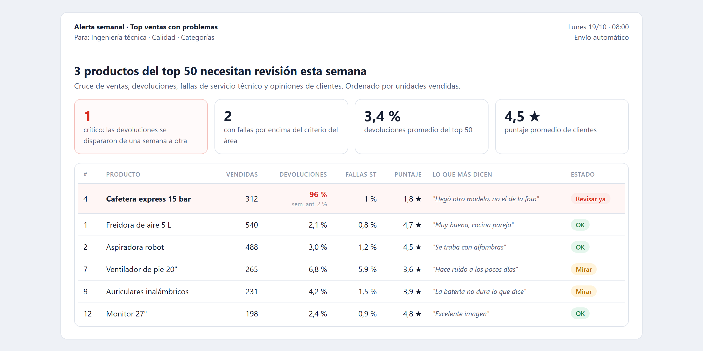
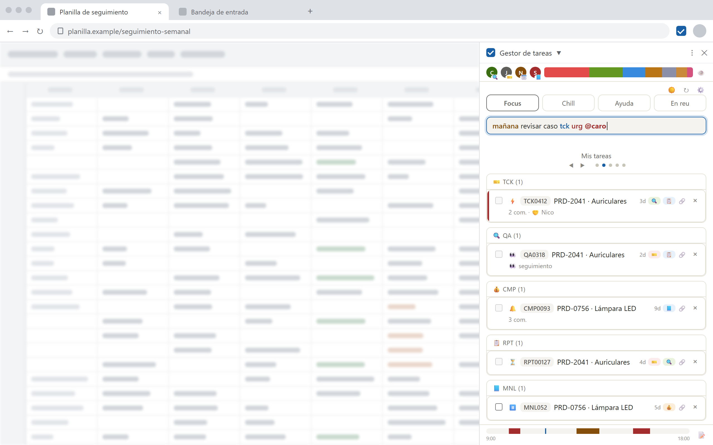

La base técnica
Me formé como Técnica en Informática en la secundaria. El software siempre fue mi interés y mi hobby: aprendí a construir sistemas por mi cuenta.
Mi historia
Mi trabajo tiene un hilo conductor: transformar información dispersa en conocimiento claro para que otras personas puedan decidir.
Me formé como Técnica en Informática en la secundaria. El software siempre fue mi interés y mi hobby: aprendí a construir sistemas por mi cuenta.
En el taller mecánico de mi familia llevé la gestión de los cuadernos a mano a una base vinculada, con un bot y una web para el celular.
Desde julio de 2026 trabajo como analista en una empresa de e-commerce, donde desarrollé 6 reportes, tableros y herramientas que hoy usan otros equipos.
Estudio Comunicación Social en la UBA, en el área de investigación. Ahí entendí algo que guía mi trabajo: un volumen grande de datos no dice nada sin criterio para cuestionarlo y sin alguien que lo cuente bien.
Casos
Seleccioná un caso para ver el detalle: la pregunta, los datos, el hallazgo y la decisión que permitió.
Devolución totaldetectada de una semana a otra, con la causa identificada y corregida

10 → 3 minpor búsqueda, con 7 fuentes integradas

Un hallazgo, paso a paso
Así funciona la alerta de los lunes. Esta es una recreación con datos inventados del caso real.
| Producto | Vendidas | Devoluciones | Puntaje | Estado |
|---|---|---|---|---|
| Freidora de aire | 540 | 2 % | 4,7 ★ | OK |
| Aspiradora robot | 488 | 3 % | 4,5 ★ | OK |
| Producto premium | 312 | 96 % | 1,8 ★ | Revisar ya |
| Ventilador de pie | 265 | 7 % | 3,6 ★ | Mirar |
| Auriculares | 231 | 4 % | 3,9 ★ | OK |
Hoy la alerta se usa para revisar productos de forma preventiva.
Cómo trabajo con datos
Cómo soy para trabajar
Dos años como docente de tecnología para adultos mayores de 50 me enseñaron que cada persona se conecta con un mensaje de forma distinta. Adapto el lenguaje y el formato a quien lo recibe.
Identifico los pasos que generan demoras o carga innecesaria y los automatizo o los elimino, para reducir el tiempo operativo y la carga cognitiva del equipo.
Valido cada entrega. Uso la IA como herramienta para potenciar mi trabajo; el criterio, la validación y la responsabilidad del resultado son míos.
Desarrollo mis herramientas junto a quienes las usan y las ajusto con su feedback. Me formo de manera constante: hoy curso Power BI con Microsoft e inglés profesional.
Contacto
Comunicación Social (UBA, área de investigación) · AI Fundamentals de Google · cursando Power BI con Microsoft e inglés profesional.
Escribime por LinkedIn